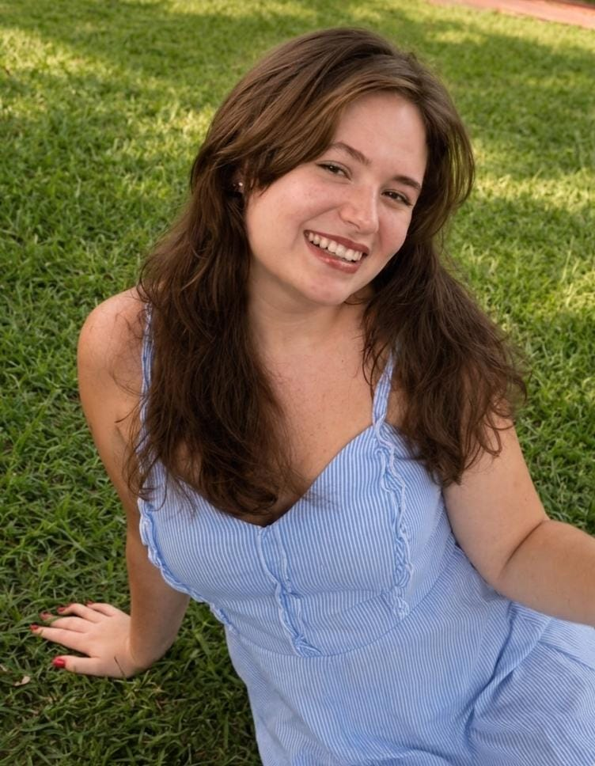

Um espaço seguro para falar, sentir e se compreender no seu tempo. 🌷
Fale comigo
Para quando a mente não desacelera e o corpo sente o peso disso.
Um espaço para acolher o que dói, sem pressa e sem julgamento.
Entender seus padrões para escolher com mais liberdade.
Aprender a se colocar com clareza e respeito, nos vínculos que importam.
Construir uma relação mais gentil com quem você é.
Ferramentas práticas para lidar com as emoções no dia a dia.
Formada em Psicologia pela Universidade Estácio de Sá, sou especialista em Terapia Cognitivo Comportamental (TCC).
Atuei 2 anos como monitora na clínica-escola (SEP) da universidade, com experiência prática em estágio supervisionado no atendimento clínico e na condução da rotina clínica.
Minha prática clínica é guiada pelo equilíbrio entre técnica e humanidade. Acredito que cada processo terapêutico deve ser conduzido com ética, acolhimento e sensibilidade.
"Conheça todas as teorias, domine todas as técnicas, mas ao tocar uma alma humana, seja apenas outra alma humana." — Carl Jung
Sou apaixonada por artes e criatividade, tenho uma conexão profunda com animais, carinho por música brasileira e rock nacional. Amo natureza, verão, viagens e os pequenos momentos de paz.
Acredito que a conexão é o ponto de partida de qualquer processo terapêutico — por isso, antes da técnica, existe escuta de verdade.
Informalidade e proximidade, sem distanciamento clínico frio.
Explico o processo e as técnicas usadas antes de cada etapa.
Kits terapêuticos personalizados — Kit Âncora, Kit SOS, cartas e cartões de respiração e mindfulness.
Reviso anotações e reflito sobre o seu processo entre as sessões.
Nada aqui é feito "em você" — tudo é construído com você.
"Me senti acolhida desde a primeira sessão. Um espaço leve para falar do que dói."
"A Camille tem uma escuta muito atenta e humana. Recomendo de olhos fechados."
"Aprendi a lidar com a ansiedade de um jeito prático e gentil comigo mesma."
Espero construir esse espaço como um lugar leve, acolhedor e verdadeiro. Onde possamos compartilhar reflexões, cuidado, afeto e saúde mental de forma humana e sem julgamento. 🤍
Fale comigo no WhatsApp